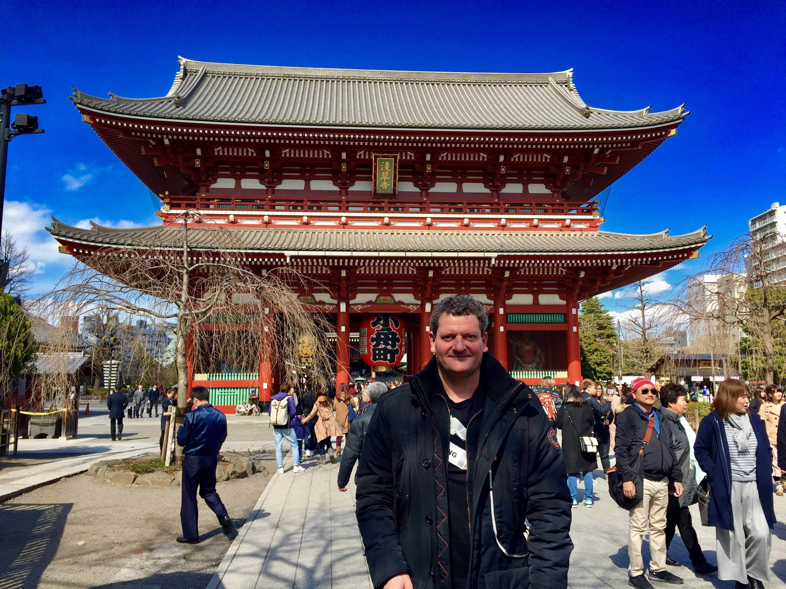
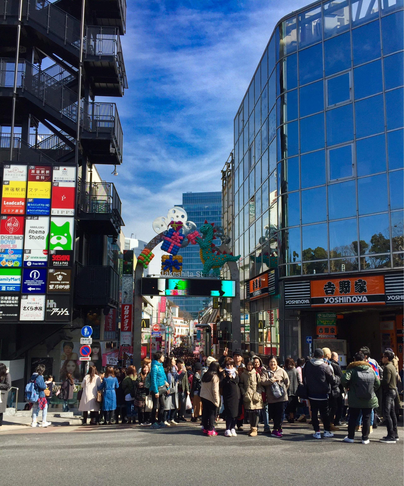

Tokio - Megacity, Hauptstadt Japans, Trendsetter. Egal was einem alles zu Tokio einfällt, sie ist für mich eine der schönsten Städte der Welt. Die Stadt ist inspirierend, teils chaotisch aber auch entspannend. Je nachdem, wo man sich gerade aufhält.
Das Schöne ist: Man gewöhnt sich an das gefühlte Chaos. Mit jedem Besuch habe ich Tokio ein bisschen besser kennengelernt, – auch wenn jeder neue Besuch eine Herausforderung ist, da sich die Stadt megaschnell weiterentwickelt.
Von Weihrauch-Nebeln und Pagoden-Pracht
Mein Abenteuer startete in Tokiwadai, einem Wohnviertel inTokyo mit guter Anbindung in die Innenstadt. Erstes Ziel: Asakusa. Hier steht der Sensō-ji, der wohl berühmteste Tempel der Stadt. Es ist dieser magische Ort, an dem das ursprüngliche, historische Japan hart auf das Moderne prallt. Während ich durch das gewaltige Hozomon Gate spazierte und den Blick auf die fünfstöckige Pagode genoss, fühlte ich mich kurzzeitig wie in einer anderen Zeit. Das riesige Gate ist schlichtweg ein Eyecatcher.
Zuckerwatte und Cosplay in Harajuku
Harajuku. Wenn ich dieses Viertel mit nur einem Wort beschreiben müsste, wäre es: "Bunt". Und zwar so richtig „Ein-Einhorn-hat-sich-regenbogenfarben-übergeben“.- bunt. Eines der Highlight hier ist die Takeshita-dōri. Ich bin dort buchstäblich in eine Welt aus Regenbogen-Zuckerwatte und Crêpes-Ständen eingetaucht. Zwischen all den ausgefallenen Styles zeigt hier die Cosplay-Szene ihre Outfits – es ist die beste Show der Welt - zumindest du stehst darauf.


In den Neon-Schluchten von Shinjuku
Sobald die Sonne untergeht, mutiert Tokio zu einem Lichtermeer aus LEDs. - Shinjuku bei Nacht ist pure Elektrizität. Überall blinken Neon-Schilder, grelle Leuchtreklamen schreien um Aufmerksamkeit, und die schwarzen Taxis glänzen im Asphalt-Dschungel.
Der Bahnhof Shinjuku zeigt nicht nur die größte 3D Katze der Welt auf einem riesigen Bildschirm, er ist auch ein Megalabyrint. Trotz gutem Orientierungssinn habe ich hier schon einige Kilometer zurückgelegt. Kabukichō ist das Highlight von Shinjuku. Gefolgt vom berühmt-berüchtigten Robot Restaurant. Denn jetzt bist Du endgültig im „Crazy Japan" angekommen.
Nerd-Level 100 in Akihabara
Akihabara das Elektronik- und Gaming-Viertel ist das Paradies für alle Otakus. Überall Anime, Manga und Technik-Spielereien, von denen ich nicht mal wusste, dass es sie gibt. Es ist laut, es ist schrill und es ist absolut faszinierend zu sehen, mit welcher Begeisterung hier die Nerd-Kultur zelebriert wird.
Mein Fazit: Tokio ist keine Stadt, die man einfach nur besichtigt. Man muss sie einatmen, manchmal auch aushalten, aber lieben wird man sie immer. Tokio wir sehen uns wieder.